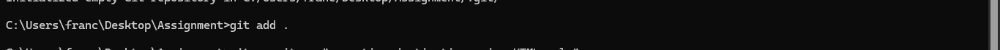
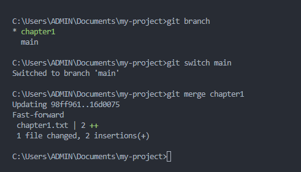

Get Started
Before we begin, ensure you have a text editor installed (like VS Code, Sublime Text, or Atom) and a terminal or command prompt available on your system. We'll be using these tools throughout this tutorial.
What is Git?
Git is a distributed version control system that helps track changes in source code during software development. It was created by Linus Torvalds in 2005 for development of the Linux kernel.
A version control system (VCS) is a tool that helps track changes to files over time. While Git is the most popular, other VCS include:
- Subversion (SVN)
- Mercurial
- Perforce
In this tutorial, we'll focus on Git as it's the industry standard and works seamlessly with GitHub, the largest platform for hosting Git repositories.
Installing Git
First, check if Git is already installed:
git --version
If Git is installed, you'll see a version number. If not, you'll get an error message.
If Git isn't installed, download it from:
- Windows: https://git-scm.com/download/win
Configuring Git
Set up your identity:
git config --global user.name "Your Name"
git config --global user.email "your.email@example.com"
Initializing a New Repository
A Git repository is a directory where Git tracks all changes to your files. To create a new repository:
You can use the git hub website to create a new repository as shown in the image below
git init
You can initialize a new repositiry through vs code terminal in the following way
Once the repository is initialized, you can add files to it:
Adding Files to the Staging Area
The staging area is a preview of your next commit. Files can be:
- Untracked: New files Git doesn't yet track
- Tracked: Files Git is monitoring for changes
git add . # Add all files
Committing Changes
Commits are snapshots of your repository at a specific point in time.
git commit -m "Add initial files"
Branches
Branches allow you to develop features, fix bugs, or experiment safely without affecting the main project. The default branch is usually called 'main' or 'master'.
Creating a Branch
git branch "feature-name"
You can also create a new branch and switch to it at the same time:
git checkout -b feature-name
Viewing All Branches
git branch
The active branch is marked with an asterisk (*).
Switching Active Branches
git checkout -b branch-name
Merging a Branch
git checkout main git merge feature-name
Deleting a Branch
git branch -d branch-name # Safe delete git branch -D branch-name # Force delete
Next Steps
To continue your Git journey, consider learning:
- GitHub and remote repositories
- Pull requests and code review
- Git rebasing
- Git hooks
- Advanced Git commands and features